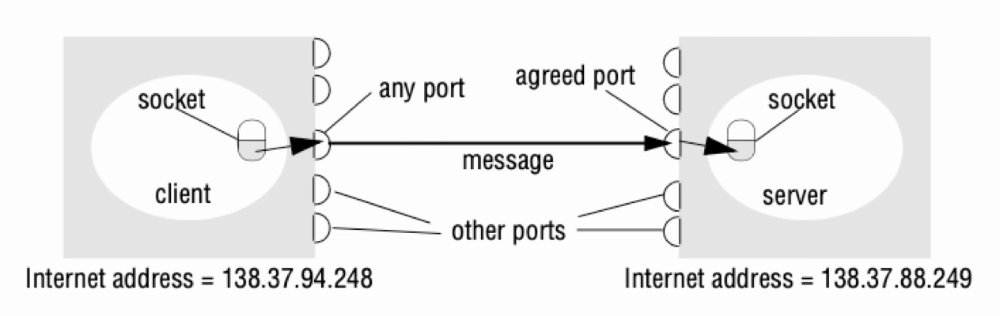

Tema 3. Communicación
Sistemas Actuales de Computación
Comunication
- Sockets
- Remote Procedure Control
- Servicios Web: Restful
Sockets
Dominant API for Transport layer connectivity.
Created at UC Berkeley for 4.2BSD Unix (1983)
Design goals:
- Communication between processes should not depend on whether they are on the same machine
- Communication should be efficient
- Interface should be compatible with files (stdio,stdout)
- Support different protocols and naming conventions.
Sockets
A socket is an abstract object from which messages are sent and received. Like a file descriptor.

Sockets. Connection-oriented (TCP) socket operations
Client
- Create socket: socket
- Name the socket (local address, port): bind
- Connect to the other side: connect
- read / write byte streams: read/write
- Close the socket: close
Server
- Create socket: socket
- Name the socket (local address, port): bind
- Set the socket for listening: listen
- Wait for and accept a connection; get a socket for the connection: accept
- read / write byte streams: read/write
- Close the listening socket: close
- Close the socket: close
Sockets. Connectionless (UDP) socket operations
Client
- Create socket: socket
- Name the socket (local address, port): bind
- Send a message: send to
- Receive a message: recvfrom
- Close the socket: close
Server
Create socket: socket
Name the socket (local address, port): bind
Receive a message: recvfrom
Send a message: send to
Close the socket: close
Sockets. OS Kernel

Sockets. Monitoring I
Command: socket statistics (ss)
Command: lsof
FD - field descriptor:
- 0u, 1u, 2u: stdin, stdout, stderr. Preguntar a IA
- 3u: El descriptor número 3, abierto para lectura/escritura (u). !!!
- 4w: Descriptor 4, abierto solo para escritura (w).
Sockets. Monitoring II
Command: ls
File: softirqs
Rows: Net_TX, Net_RX Preguntar a IA
Actividades
Entregable
- Implementa un servicio mediante sockets que ofrece las siguientes operaciones matemáticas: add, sub, div, mult, sqrt, mean, y std.
- Un sistema para lanzar n-clientes que consumiran estas operaciones siguiendo una distribución exponencial de activación.
- Monitoriza las conexiones y el tráfico.
- Justifica las consideraciones de diseño e implementación tomadas.
Remote Procedure Control (RPC)
RPC: Protocol to call procedures on other machines. (Birrell and Nelson 1984)
[Birrell and Nelson (1984)][https://web.eecs.umich.edu/~mosharaf/Readings/RPC.pdf](https://web.eecs.umich.edu/~mosharaf/Readings/RPC.pdf)
- ¿Cuál es el objetivo que presentan los autores de este trabajo?
- ¿Qué estaba ocurriendo para plantear: ``¿Por qué programar entre dos máquinas tiene que ser mucho más complicado que llamar a una función dentro del mismo programa?'' ?
- ¿Qué requerimientos son necesarios por parte del Sistema Operativo?
- ¿Qué retos presenta el RPC?
- ¿Qué significado tiene `stub`?Evolución RPC -> Web browser (I)
RPC orientado a objetos: CORBA, Java RMI, DCOM
Web browser: dominant model for user interaction on the internet. Transport over HTTP protocol. Web services: XML-RPC, SOAP
Evolución RPC -> Web browser (II)
Four HTTP commands to operate on data (a resource):
- CRUD operations: PUT (create), GET (read), POST (update), DELETE (delete)
- OPTIONS (query) - determine options associated with a resource (rarely)